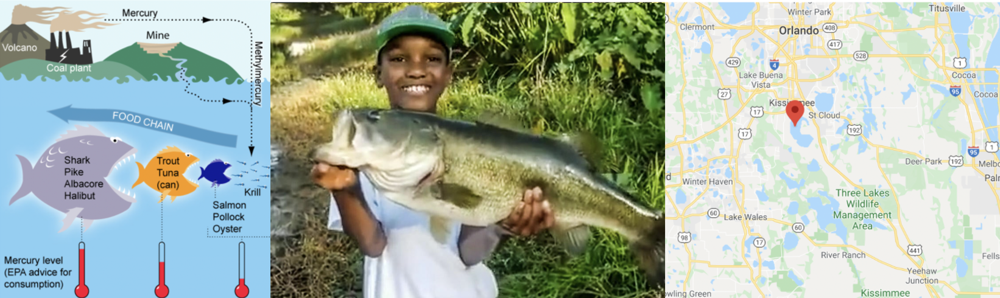
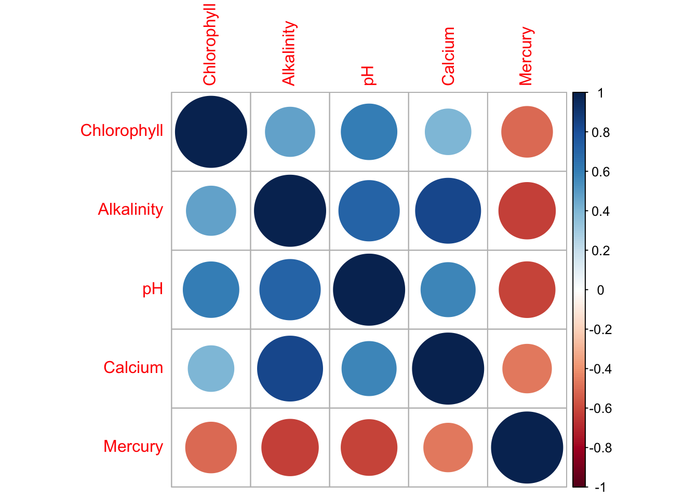
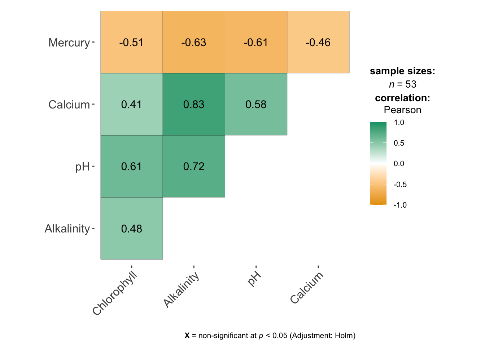
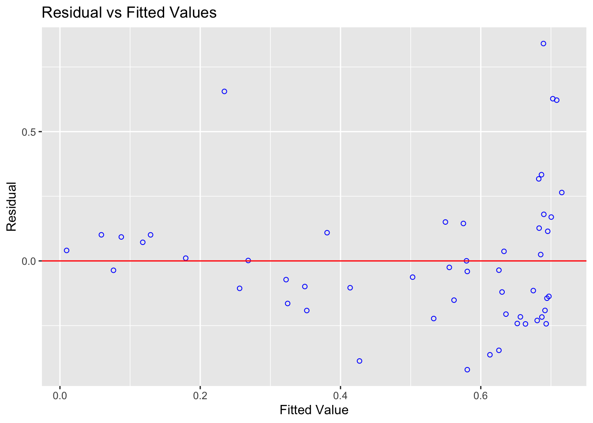

# Load libraries
library("tidyverse") # Lots of data processing commands
library("knitr") # Helps make good output files
library("ggplot2") # Output plots
library("rmarkdown") # Helps make good output files
library("lattice") # Makes nice plots
library("RColorBrewer") # Makes nice color-scales
library("skimr") # Summary statistics
library("Stat2Data") # Regression specific commands
library("corrplot") # correlation plots
library("GGally") # correlation plots
library("ggpubr") # QQplots
library("olsrr") # Regression specific commands
library("plotly") # Interactive plots
library("readxl") # Read from excel files
library("equatiomatic") # extract equations
library("ggstatsplot") # Make nice plots
library("visreg") #visualise regression outputs
library("MASS")
## you may need additional libraries or to install some of these.
#Just install them and add them to this list if you get errors.Lab 4: LINE and transformations
Welcome to Lab 4
The aim of this lab is to continue to get used to simple linear regression in R.
The Canvas page for this lab is:
If the labs are causing major problems with your computer or your computer hardware is struggling (or you have any other software issue), Talk to Dr Greatrex and REMEMBER YOU CAN ALWAYS USE RSTUDIO CLOUD.
IF YOU CANNOT DOWNLOAD SF ON R-STUDIO CLOUD, PLEASE LET DR G KNOW
Getting started - DO NOT SKIP
We will start removing style marks for lab write-ups that have missed this sectino
1. Make a new project and markdown file
Follow Tutorial 2 (link working) to create a new project and a new RMarkdown file that knits.
You should now have a new project and a new RMarkdown file that knits.
Create a code chunk near the top and load these packages. You may need to install them first using Tutorial 2.3 (Link working).
Step D: Finally, press knit to check the html works and your theme works.
2. Code showcase
IF YOU IGNORED STEP 1 ABOVE GO BACK AND DO IT! You lose marks for things like no theme, poor headings etc.
3. Florida Fish Challenge
PART 3: Florida Fish and Mercury poisoning
Background - READ IT
(remember google translate if/as needed)
Small amounts of the element mercury are present in many foods. They do not normally affect your health, but too much mercury can be poisonous. Although mercury is naturally occurring, the amounts in the environment have been on the rise from industrialization.
More details
More details here:
- https://www.wearecognitive.com/project/extra-narrative/bbc-mercury
- https://medium.com/predict/mercury-pollution-reaches-the-deep-sea-f59a4938dc7c
In the late 1980s, there were widespread public safety concerns in Florida about high mercury concentrations in sport fish. In 1989, the State of Florida issued an advisory urging the public to limit consumption of “top level” predatory fish from Lake Tohopekaliga and connected waters: including largemouth bass (Micropterus salmoides), bowfin (Amia calva), and gar (Lepisosteus spp.). This severely impacted tourism and the economy in the area.
Urgent research was required to inform public policy about which lakes needed to be closed.

Goal
We are going to reproduce part of one study on the topic conducted by T.R. Lange in 1993.
Dr Lange and their team took samples from 53 lakes in the Central Florida area. Using water samples collected from each of the lakes, the researchers measured the pH level, as well as the amount of chlorophyll, calcium and alkalinity. The Mercury concentration in the muscle tissue of lake fish was also recorded.
The units of the your dataset are:
| Variable | Unit |
|---|---|
| Chlorophyll | micrograms/Litre, \(\mu g/L\) |
| Alkalinity | miligrams/Litre, \(mg/L\) |
| pH | Unitless |
| Calcium | miligrams/Litre, \(mg/L\) |
| Mercury | Micrograms, \(\mu g\) |
The data is stored on Canvas in bass.csv.
You can see part of the paper here: https://www.researchgate.net/publication/15388314_Mercury_accumulation_in_largemouth_bass_Micropterus_salmoides_in_a_Florida_Lake
You have been asked to assess whether the alkalinity levels of a lake might impact Mercury levels in largemouth bass. You will be presenting your results to the Mayor of Orlando in order to set new fishing regulations.
1. Obtain the data
Obtain the data from Canvas and put it in your project folder. Use read_excel to read it into R and save it as a variable called bass. e.g.
bass <- read_excel("bass.xlsx")2 . Describe the study
Step 1: If you skipped it, go back and read the brief above. Seriously, it will save you time. Now describe what you are trying to do and the data available, including
- Why people who care about Mercury poisoning are looking at fish (use the reference links)
- What you are trying to achieve
- The data available and what population you are planning to apply it to
- The object of analysis,
- The variables and their units (especially identifying the response variable)
Use headings/sub-headings etc to make your write up easy to read (click on Visual)
3. EDA
Conduct a quick exploratory analysis of the data using commands like skim (read ahead first!). In the text describe how much data is available, is there missing data and any other interesting features. If you already did this above, just refer to what you did.
Make a histogram of the response variable and use any method you see fit to assess its normality. Describe your findings in the text.
4. Correlation
This code will a correlation matrix plot to look at the relationship between all the variables/
Get it running in your report and use the help file for either corrplot or ggcorrmat to change the formatting (might be colors, might be .
Describe the relationships you see in the text and which (if any) other predictors might be confounding variables.
# The [-1] here means remove the first column as it's character based
# Get the correlation matrix in numbers
corr_data <- cor(bass[,-1])
# And two ways of plotting
# From ggstatsplot
corrplot(corr_data)
# From the ggcorrplot package
ggcorrmat(bass) 
5. Simple Linear Model
Create a linear model between your response and predictor (remember to read the problem statement to work out what they are). It will make your life easier to save this as a variable called model1. e.g.
model1 <- ..Make a professional looking scatterplot (this should have proper x,y axis labels etc) with the line of best fit plotted from the model. BONUS mark, install the visreg library and use this website to make your plot (https://pbreheny.github.io/visreg/)
Describe the scatter-plot (e.g. strength, association, outliers etc)
Print the linear model summary from olsrr.
Use equatiomatic or any other method to formally write out the linear model equation and coefficients.
The Mayor doesn’t know regression. Clearly interpret the estimated model parameters (slope & intercept)/model summary-statistics in the the context of the problem, in a way that would be understandable to a policy maker.
By this I mean explain what the slope/intercept means in terms of fish and florida, highlighting if this is useful or nonsensical (for example, knowing the weight of someone with zero height is not useful).Tell me the coefficient of determination/percentage of variation explained by your model?
6. Check LINE
We would normally do this first, but we covered it last in class.. I have provided the code, but you can find a full tutorial here explaining how I interpret it. (https://psu-spatial.github.io/stat462-2022/T1_R_Basics.html#12_Checking_LINE_Assumptions )
- I have assumed that you have called your model model1 and your table, bass. It extracts your predicted y-values, the residuals, the standardised residuals and outlier analysis for each data point. Get this working without errors for you
# Make a new column with the predicted y value
bass$y_predicted <- model1$fitted.values
# Make a new column with the raw residuals
bass$residuals_m1 <- model1$residuals
# Make a new column with the standardisd/studentised residuals
# This is from the MASS libary
bass$residuals_m1stud <- studres(model1)
# Make a new column with the leverage
bass$x_leverage <- ols_leverage(model1)
# Make a new column with the Cook's distance. OLSRR package
bass$cooks.distance <- cooks.distance(model1)
# Print out the table
head(bass)# A tibble: 6 × 11
Lake Chlorophyll Alkalinity pH Calcium Mercury y_predicted residuals_m1
<chr> <dbl> <dbl> <dbl> <dbl> <dbl> <dbl> <dbl>
1 Alligat… 0.7 5.9 6.1 3 1.53 0.689 0.841
2 Annie 3.2 3.5 5.1 1.9 1.33 0.703 0.627
3 Apopka 128. 116 9.1 44.1 0.04 0.0763 -0.0363
4 Blue_Cy… 3.5 39.4 6.9 16.4 0.44 0.503 -0.0628
5 Brick 1.8 2.5 4.6 2.9 1.33 0.708 0.622
6 Bryant 44.1 19.6 7.3 4.5 0.25 0.613 -0.363
# ℹ 3 more variables: residuals_m1stud <dbl>, x_leverage <dbl>,
# cooks.distance <dbl>- You can use this command to make an automatic plot of the raw residuals
# From the OLSRR package
ols_plot_resid_fit(model1)
Also manually create a plot using the new columns in your table of the studentized residuals (y-axis) vs fitted/predicted y values (x-axis). In the text explain the difference between the two plots.
Using the plots explain if it meets the assumptions for linearity and equal variance.
Use this code to explain if it meets the assumptions for normality (we will assume independence for the sake of a shorter lab)
7. Residuals
We will cover these in Friday’s lecture
- Use this tutorial on outliers to show your workings/R-code/thought process and identify:
The name of the lake with highest residual mercury value
The name of the lake with highest leverage
The name of the lake with highest Cook’s distance
Remember you can filter and sort the data table in the View command. You can also use commands like max() and identify.
- Another analyst looked at your results and suggested that there are four Lakes which appear to be close to Influential Outliers. In your analysis, use Cook’s distance to explain why they think this and identify the Lakes they are worried about. Do you agree with their comment? Explain your reasoning and provide evidence.
8. Transformations
Linearity appears to be the biggest problem - we are going to see if we can use a transformation to fit the data. We will cover these in next Monday’s lecture
To do this, we create a new column in your dataset and save it as a logtransformation
bass$Log_Alkalinity <- log(bass$Alkalinity)- Get this running in the code, then fit a model between your response and Log_Alkilinity, assess it for LINE/outliers and discuss in the text how/why your model has improved.
REMEMBER YOU CAN COPY/PASTE YOUR OLD CODE!
Here I am hoping for a professional scatterplot, a description of the model including the mathematical equation written out, an assessment of whether the new model meets each of the assumptions needed for linear regression, if there are any influential outliers and if the R2 value has changed.
Out of the two models you made in this lab, one would you choose and why?
9. New Lake
Make a new subsection called Analysis Questions
The Governor recently had a question from a member if the public who went fishing in a new lake that was not part of the study. We know the alkalinity level of that lake was 40mg/L. The member of the public wants to be 99% sure that they won’t exceed the Florida Health Advisory level for Mercury levels in Fish, which is 1 \(\mu g\) of Mercury.
Should they eat the fish? Explain your answer and show your evidence for how you came to your conclusion. You should decide the best model to use.
10. More complex
This question is designed to be more difficult and realistic. I will answer points of clarification, but I will not help anyone work through it before the labs are submitted. However I will award partial marks for workings and how far you get
The Florida Health Advisory level for Mercury levels in Fish is 1 \(\mu g\) of Mercury. The Governor has accepted your model and is requiring state-wide alkalinity tests.
Using your new model, what is your recommended “safety cut-off” value of alkalinity for new lakes? You would like to be 95% sure that you aren’t just seeing this result by chance. Provide evidence/code showing how you got to your answer
11. Submitting your Lab
Remember to save your work throughout and to spell check your writing (next to the save button). Now, press the knit button again. If you have not made any mistakes in the code then R should create a html file in your lab 1 folder which includes your answers. If you look at your lab 1 folder, you should see this there - complete with a very recent time-stamp.
In that folder, double click on the html file. This will open it in your web-browser.
CHECK THAT THIS IS WHAT YOU WANT TO SUBMIT.
If you are on R studio cloud, see Tutorial 1 for how to download your files
Now go to Canvas and submit BOTH your html and your .Rmd file in Lab 1.

Grading Rubric/checklist
See the table below for what this means - 100% is hard to get!
HTML FILE SUBMISSION - 5 marks
RMD CODE SUBMISSION - 5 marks
Professional report 10 MARKS
Full marks for a report you could take into a job interview. You have done things like fully labeled plots using words, your plots look great, written full paragraphs/sentences, used equation formats, sub-headings, used spell check, explained results in clear language, included units, used a theme and table of contents.. You lose marks for each thing that makes it look non-professional. YOU DO NOT LOSE MARKS FOR ENGLISH GRAMMAR!
Hint, there is a spell check by the save button.
Study data, EDA & Correlation - 10 Marks
You have explored the data using the guide. You have created the correlation matrix plot and sensitively described the relationship between your response and your predictors.
First model and LINE - 10 MARKS
You created the model correctly. In your write up you have summarised the model equation (including the coefficients as numbers) & summarising units afterwards.
Residual Analysis - 10 MARKS
You have assessed whether there are outliers and whether they are influential. You have correctly answered the residual questions and shown why.
Transformed model - 10 MARKS
You have correctly refitted and interpreted the transformed models, following section 8.
Prediction - 5 MARKS
You have correctly predicted the new lake in step 13 and talked about multiple regression in Q15
Hard part - 5 MARKS
You have answered the final question correctly and shown your workings/code..
- 1/4 you try anything
- (2-3)/4 Right idea but didn’t get far
- 4/5 nearly there
- 5/5 perfect
[70 points total]
Overall, here is what your lab should correspond to: